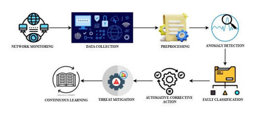
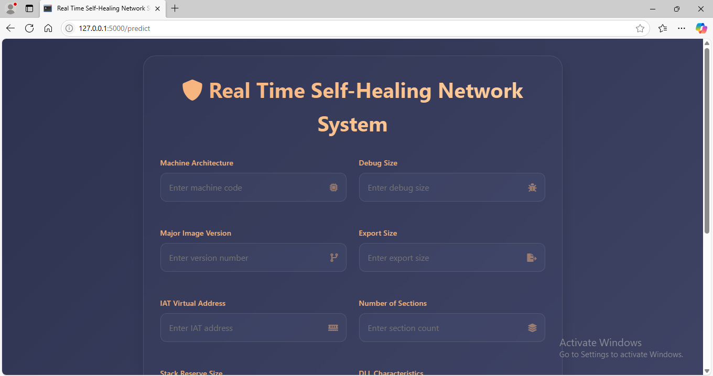
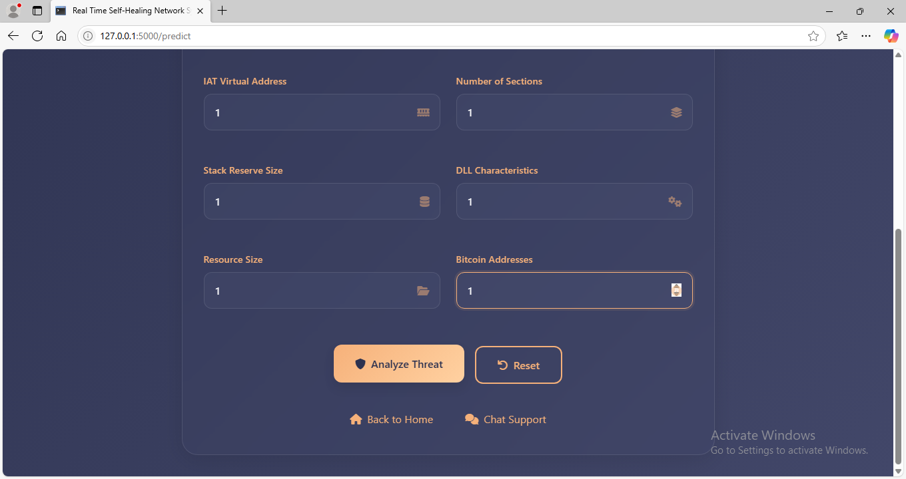
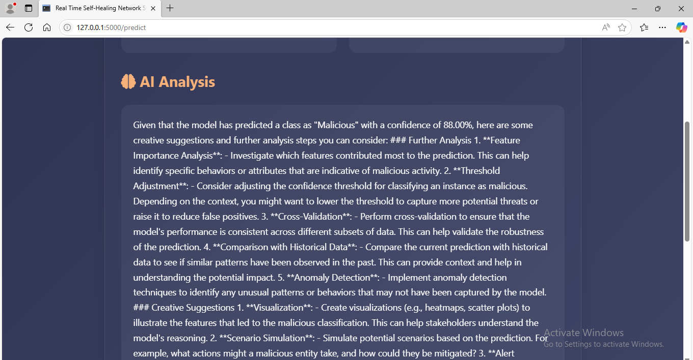
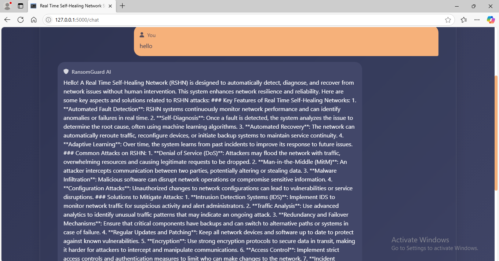
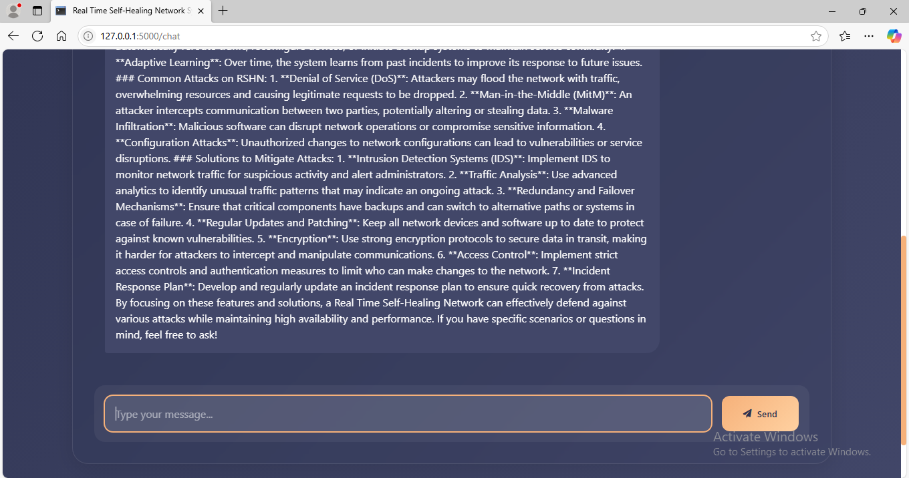
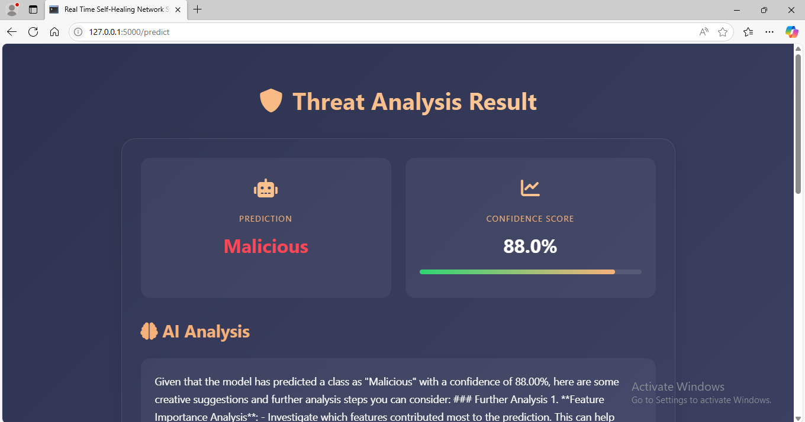

An intelligent software-based network system designed to detect network faults and security-related anomalies in real time and support recovery through alternative network paths.
The project focuses on developing an intelligent network system capable of identifying abnormal network conditions and supporting recovery without relying entirely on manual intervention.
Machine learning is integrated with networking concepts to analyse network behaviour, identify faults or security-related anomalies and support the selection of an alternative path when a network failure occurs.
Network failures, abnormal traffic conditions and security threats can interrupt communication and cause service downtime. Manual identification and recovery may also increase the time required to restore normal connectivity.
The proposed system combines machine learning with network monitoring to identify abnormal conditions. XGBoost is used for analysing network characteristics and classifying detected conditions. When a failure is identified, the system supports recovery through an available alternative network path.
Network behaviour and relevant performance information are collected for analysis.
The machine learning model analyses network characteristics and patterns.
Abnormal network conditions and security-related threats are identified.
An alternative network path can be selected to support connectivity.
Analyses network behaviour to identify abnormal conditions.
Uses XGBoost for analysing and classifying network conditions.
Supports identification of security-related network anomalies.
Supports recovery by using alternative network paths.

The self-healing approach can be considered for network environments where maintaining connectivity and responding to failures quickly are important.





A monitoring interface can be used to observe network conditions, detected anomalies and the recovery process.
